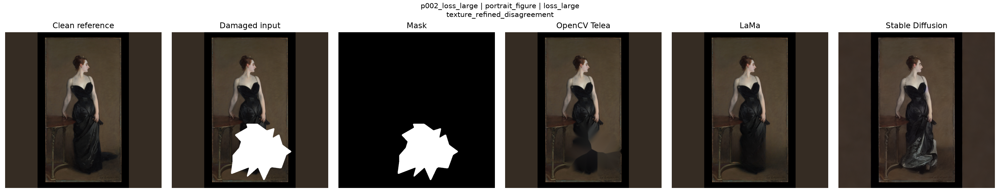

Back to case report index
Case Diagnostic Report — p002_loss_large
Category: portrait_figure
Mask type: loss_large
Selection reasons: texture_refined_disagreement
Visual diagnostic grid

Refined metric summary
| overall_metric_vote |
lama |
| opencv_telea_metric_wins |
0 |
| lama_metric_wins |
6 |
| stable_diffusion_inpainting_metric_wins |
0 |
| mixed_metric_outcome |
False |
Texture and brushstroke-proxy diagnostics
| has_texture_disagreement |
True |
Stable Diffusion uncertainty diagnostics
| has_uncertainty_heatmap |
False |
Source paths
| clean_image_path_relative |
data/processed/clean/p002_clean.png |
| damaged_image_path_relative |
data/processed/masked/p002_loss_large_damaged.png |
| mask_image_path_relative |
data/processed/masks/p002_loss_large_mask.png |
| opencv_image_path_relative |
data/processed/restored/opencv_telea/p002_loss_large_restored_opencv_telea.png |
| lama_image_path_relative |
data/processed/restored/lama/p002_loss_large_restored_lama.png |
| stable_diffusion_image_path_relative |
data/processed/restored/stable_diffusion_inpainting/p002_loss_large_restored_stable_diffusion_inpainting.png |
| case_diagnostic_grid_path |
outputs/figures/case_diagnostics/selected_case_grids/p002_loss_large_case_diagnostic_grid.png |
Interpretation note
This case report combines visual outputs and diagnostic summaries already generated in earlier notebooks.
It is intended for inspection and thesis reporting, not as a new metric computation.